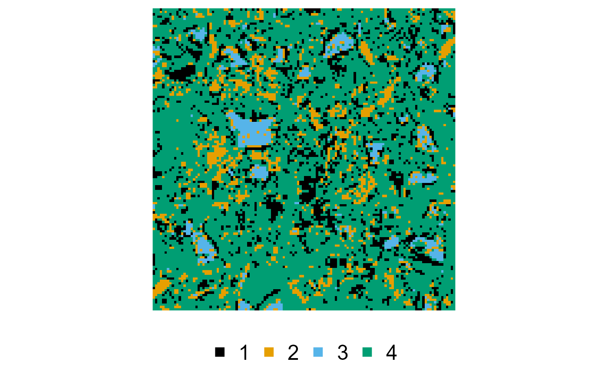
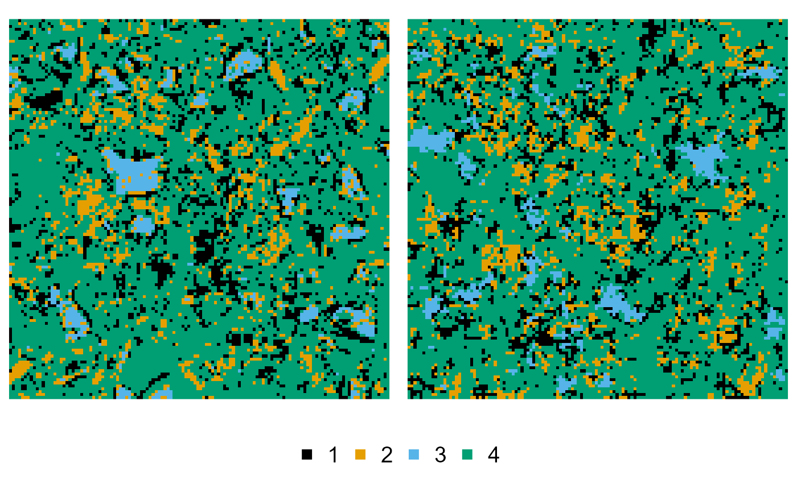
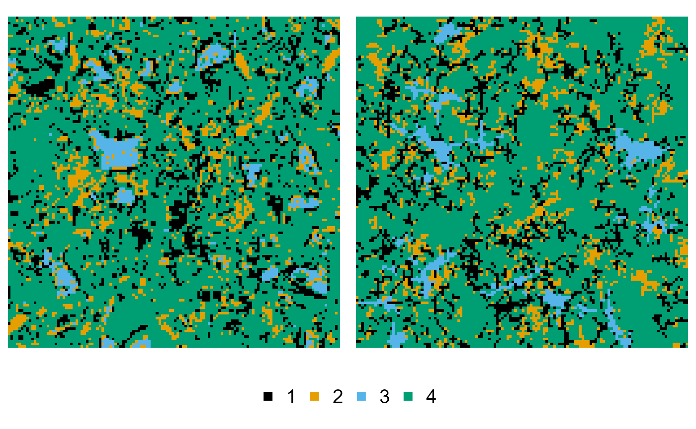
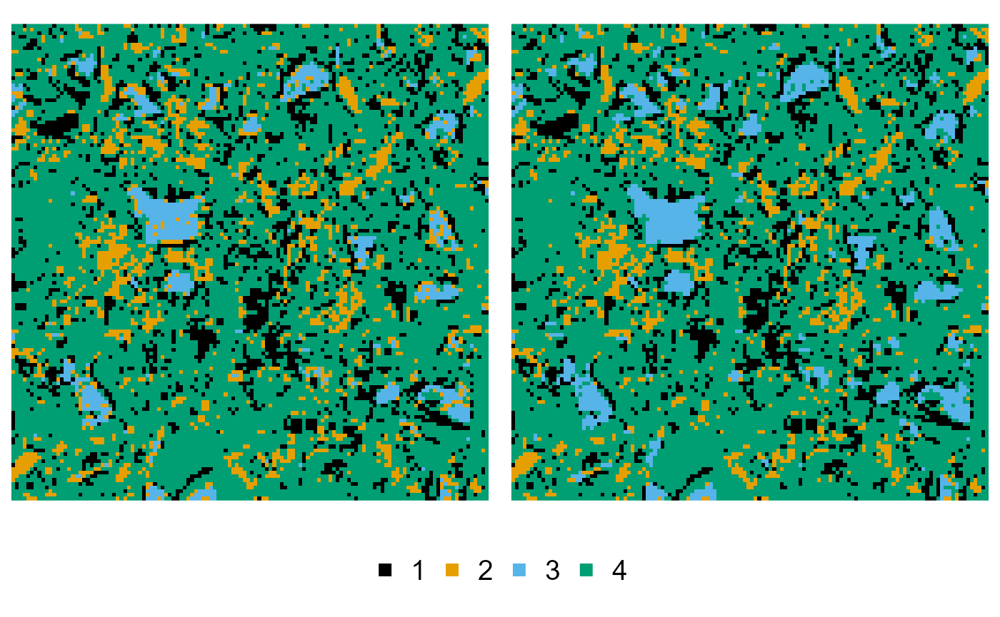
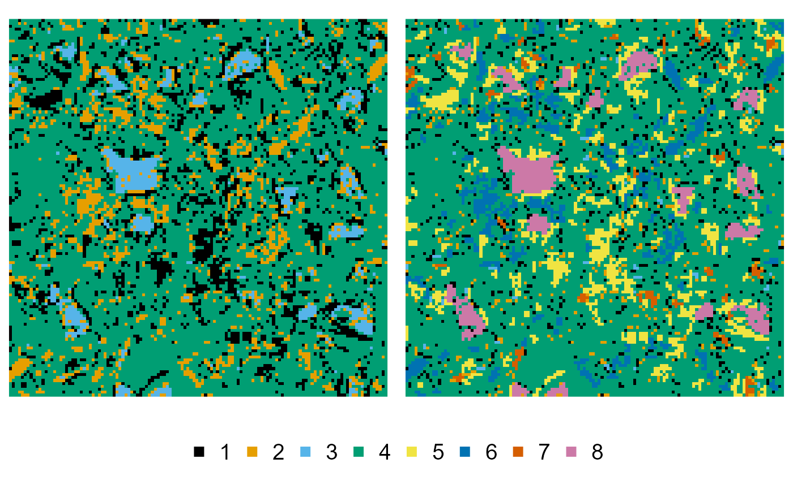
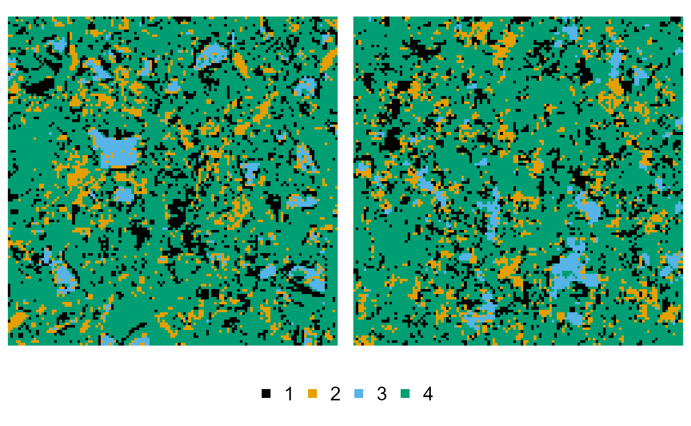

nmhsa.Rmd
library(nmhsa)
#> ! {nmhsa} is still in its experimental lifecycle stage.
#> ! Use at your own risk, and submit issues here:
#> ! <The {nmhsa} package comes with an example microstructure, i.e. a segmented cement paste image, with labels 1:4 corresponding to pores and mineral phases portlandite, clinker and CSH respectively:
cement
#> # object of class "nmhsa_array" type "integer" [128x128]
#> . "'nmhsa_array'" int [1:128, 1:128] 4 4 4 4 2 ...
plot(cement)
This is just a conventional R matrix / 2D array, with an S3 class
(“nmhsa_array”) for more useful printing and quick plotting
(well, for images with up to nine phases). Use the
as.nmhsa_array() function for adding the class to any other
matrix or array. Just try to make sure the values start with 1.
We provide the three 2D examples of the original Python code here, sometimes maybe relying on slightly different defaults. All these can be easily extended to 3D reconstruction by providing the dimensions for the reconstruction explicitly, instead of relying on the default behaviour, which generates images of the same size as the training image.
We only set order explicitly here, and rely on the
default parameters otherwise, as it does not exactly correspond to the
default order, which is from the least to the most
occurring phase:
reconstruction <- hsa(cement, order = c(3, 1, 2, 4))
#> v Preparing the Python backend ... done
#> v Reconstructing ... done
plot(cement, reconstruction)
To extend this to the multiresolution approach, we additionally
provide the levels:
reconstruction <- mhsa(cement, order = c(3, 1, 2, 4), levels = c(3, 2, 2, 1))
#> v Reconstructing ... done
plot(cement, reconstruction)
The NMHSA example is a bit more complex, as we need to preprocess the training image to provide information on the phase merging and subphase splitting. We first start by merging neighbouring pixels of phase 3 into phase 2:
cement_merged <- cement |>
phase_merge(3, into = 2)
#> ! Only merging touching pixels of phase 3 into 2
plot(cement, cement_merged)
Then we continue processing the image, and split off a series of subphases:
cement_splitted <- cement_merged |>
phase_split(1, larger_than = 3) |> # large pores
phase_split(2, larger_than = 3) |> # large portlandite components
phase_split(3, larger_than = 3) |> # large clinker components
phase_split(7, larger_than = 15) # extra large clinker components
plot(cement, cement_splitted)
Having these two modified versions of the training image, we can start the reconstruction:
reconstruction <- nmhsa(
ti = cement,
ti_merged = cement_merged,
ti_splitted = cement_splitted,
order = c(8, 7, 5, 6, 3, 1, 2, 4),
levels = c(3, 2, 2, 2, 1, 1, 1, 1),
cool = 0.98,
merge_pairs = list(c(3, 4), c(1, 4), c(2, 4))
)
#> v Reconstructing ... done
plot(cement, reconstruction)